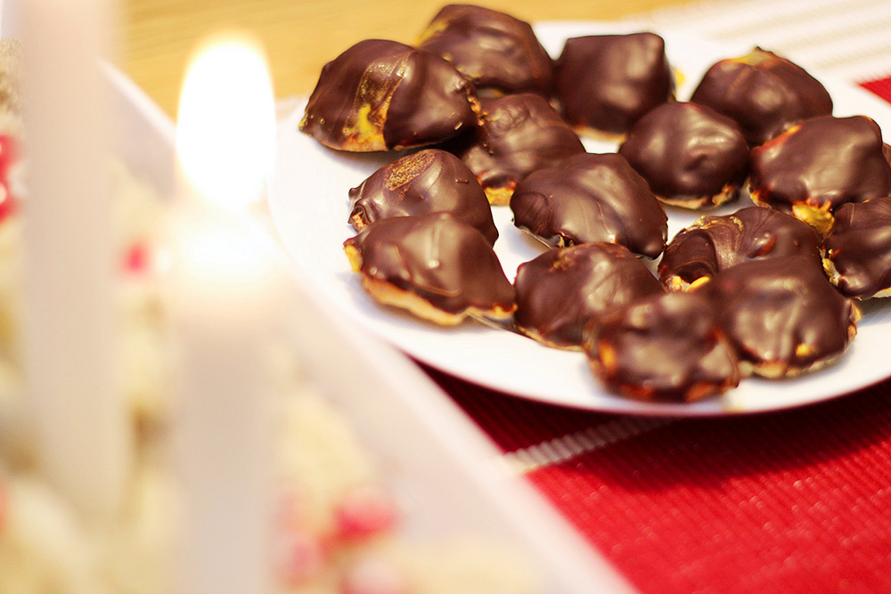
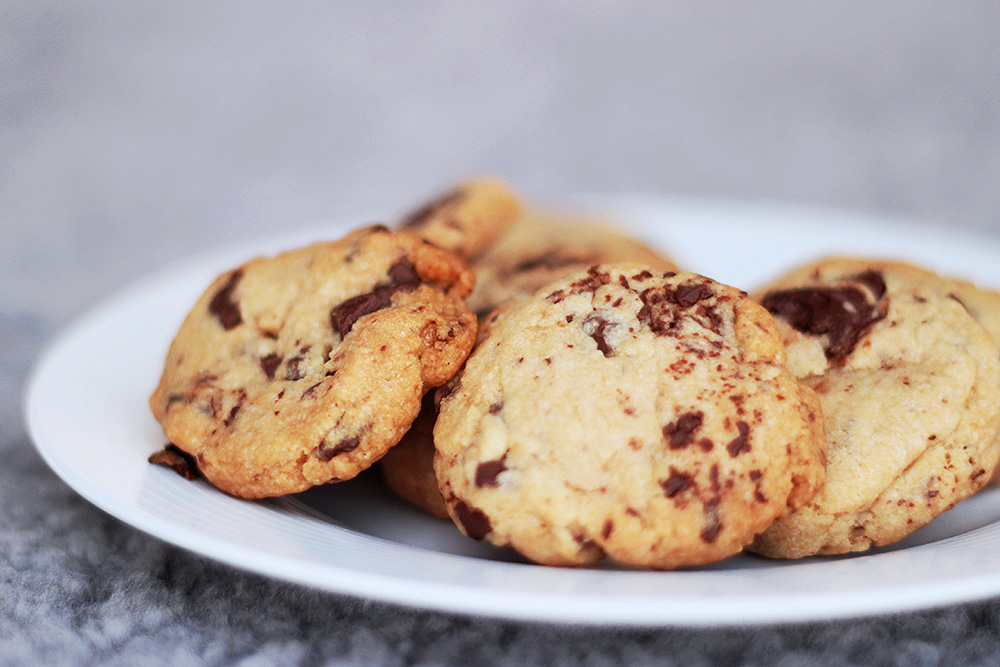

Bullar

Kanelbullar
40 kakor  90 min
90 min
How to
Smält smöret till degen i en kastrull, häll i mjölken och värm till 37°.
Smula ner jästen i degskålen och häll över smörmjölken.
Tillsätt socker, salt, kardemumma och mjölet. Arbeta samma i bakmaskin.
Låt degen jäsa 30 min under bakduk. Medan: placera ut bullformar, rör ihop fyllning.
Fyllning: blanda ihop smör, socker och kanel.
När degen jäst, knåda den och kvala ut den. Bred på fyllningen och rulla till bullar och lägg i formar.
Låt bullarna jäsa i 40 minuter under bakduk. (glöm inte att sätta ugnen på 250°)
Vispa upp ett ägg och pensla bullarna samt stör över pärlsocker.
Grädda ca 7 min i mitten av ugnen.
Låt svalna på galler under bakduk.
Jul

Veganska dadelbollar med kakao och kanel
ca 15 st 30 min
How to
Mixa sönder havregrynen i en matberedare.
Mixa sedan ner dadlarna, saltet, hälften av kanelen.
Tillsätt vatten vid behov tills degen blir en lagom klibbig smek, likt chokladbollssmet.
Bland den kvarvarande kanelen med kakao.
Rullar bollarna och rulla sedan i kakaokanel blandningen.
Låt vila i kylskåp.
Passionsfrukt tryffel
ca 20 st 60 min
How to
Hacka chokladen grovt och lägg i en skål.
Blanda grädde, honung, kakao och innehållet från passionsfrukterna i en kastrull.
Koka upp under omrörning.
Häll passionsfruktblandningen genom en sil över chokladen (för att få bort kärnorna)
Bland noga och låt svalna innan den ställs in i kylskåp ca 3 timmar.
Rulla bollar och rulla dom i florsocker.

Mini apelsin- och saffranbiskvier
30 kakor 60+ min
How to
Sätt ugnen på 175°.
Blanda apelsinjuice och saffran, låt stå ca 30 minuter..
Riv mandelmassan grovt och vispa ihop med äggvitan till en slät smet.
Spritsa ca 30 bottnar på en bakplåtsklädd plåt.
Grädda 10 minuter i ugnen.
Vispa smör och socker fluffigt, tillsätt saffranjuicen och vipsa till en len kräm.
Smält chokladen i ett vattenbad.
Bred smörkrämen på bottnarna som nu svalnat och doppa i chokladen. Låt stelna i kylskåp.
Kakor
Mintchoklad flarn
ca 40 st 120 min
How to
Sätt ugnen på 175°.
Koka upp smör, grädde och socker i en kastrull. Flytta det sedan från plattan och låt vila 5 minuter.
Hacka mandel och hasselnötter fint. Rör i nötter, mjöl och salt i gräddsmeten.
Gör 1 tsk stora högar på en plåt med bakplåtspapper ca 7 cm från varandra. Platta en med våt gaffel om det behövs.
Grädda kakorna i ugnen 8-10 minuter tills dom blivit gyllene. Ta ut och låt svalna på galler.
Slå sönder polkagrisarna. Tips: Förvara dom i frysen några timmar först och slå sedan sönder dom med hammare.
Smält chokladerna i två separata skålar. Rör ner mint extraktet i den mörka chokladen.
Bred den mörka chokladen över hälften av kakorna. Lägg sedan en annan kaka ovan på, som en sandwich.
Doppa kakorna halvvägs i den vita chokladen och rulla kanten i krossad polka.
Låt kakorna stelna på bakplåtspapper i kylskåp.

Citronmaräng kakor
40 kakor 60 min
How to
Sätt ugnen på 175°
Blanda ihop smör, socker, äggulor (spara äggvitorna) och vetemjöl till en deg. Rulla 3 längder och lägg på en plåt.
Platta rullarna och gör en skåra i mitten. Fyll skåran med lemon curd.
Gör marängen genom att vispa äggvitorna med hälften av sockret fluffigt. Vispa sedan i resten utav sockret.
Bred marängen på rullarna och toppa med de hackade pistagenötterna.
Grädda i ugnen ca 20 minuter. Skär sedan längderna till lagom stora kakor.
Mjuka Kakor
Minibrownie med fudge och salt
40 kakor 60 min
How to
Sätt ugnen på 175° och klä eller smörj en form (ca 18 x 25cm).
Smält smöret i en kastrull och tillsätt socker, kakao, salt, ägg, mjöl och rör ihop till en slät smet.
Häll smeten i formenoch grädda mitt i ugnen 25 minuter. Låt sedan svalna.
För chokladtryffeln: koka upp grädden i en kastrull och låt chokladen smälta i grädden.
Låt tjockna någon timme, gärna i kylskåp. Rör om då och då.
Bred tryffeln på kakan och skär i önskade stora rutor. Garnera med flingsalt.
Pajer
Påsk
Veganskt

Veganska cookies
40 kakor 60 min
How to
Sätt ugnen på 175°
Hacka chokladen i mindre bitar.
Vispa ihop smöret, farinsocker och vanligt socker fluffigt.
Tillsätt mjölk och vaniljsocker och vispa.
Vispa ner mjöl, salt och bakpulver. Rör sedan ner den hackade chokladen.
Gör bollar av ca 1 msk deg och lägg på en plåt med bakplåtspapper. Tryck ihop bollarna som dom får formen av en kaka.
Grädda ca 15 minuter i ugnen. Kakorna ska få lite färg.